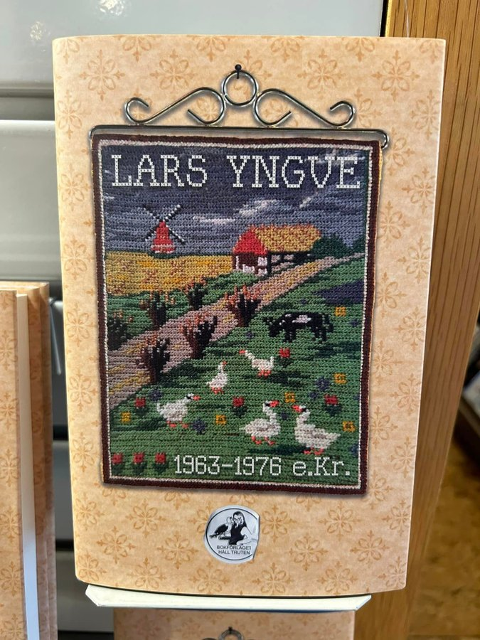
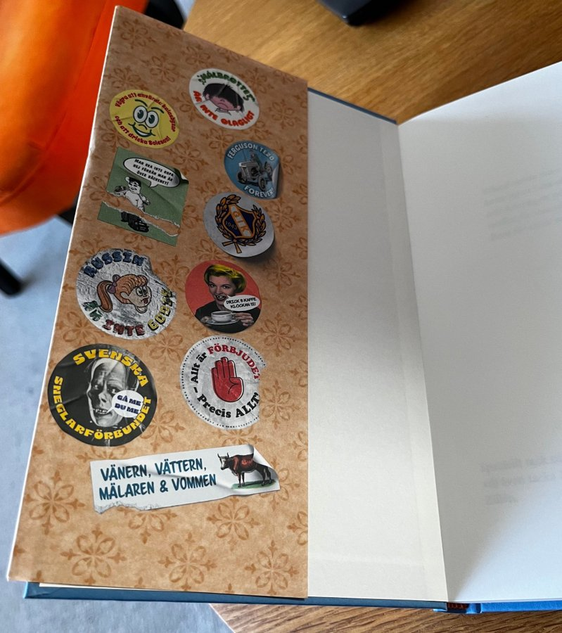
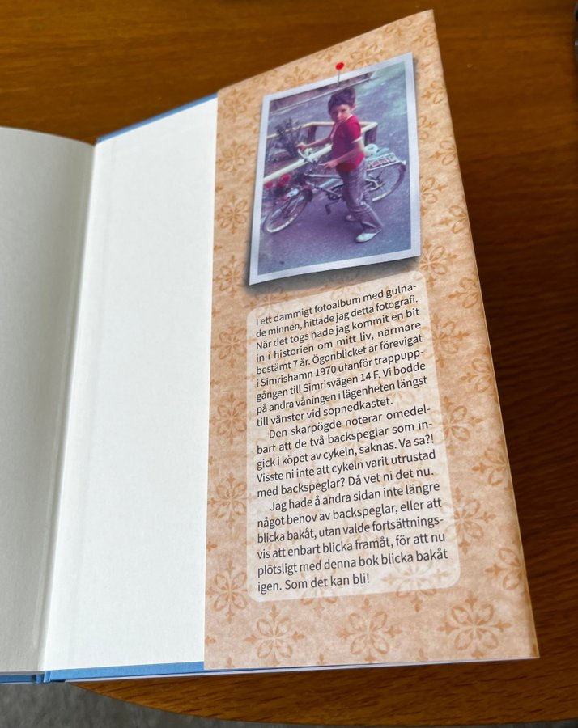
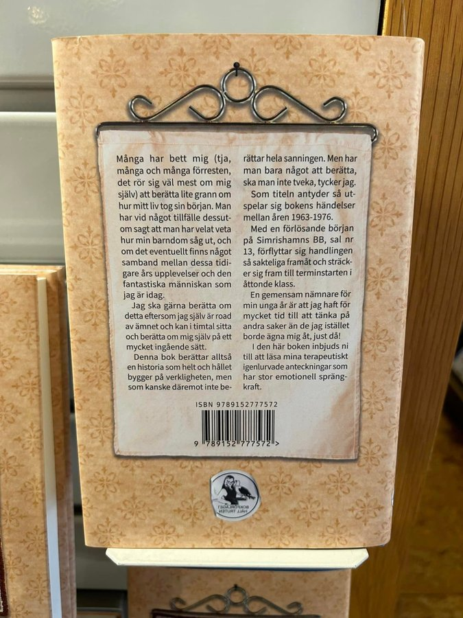
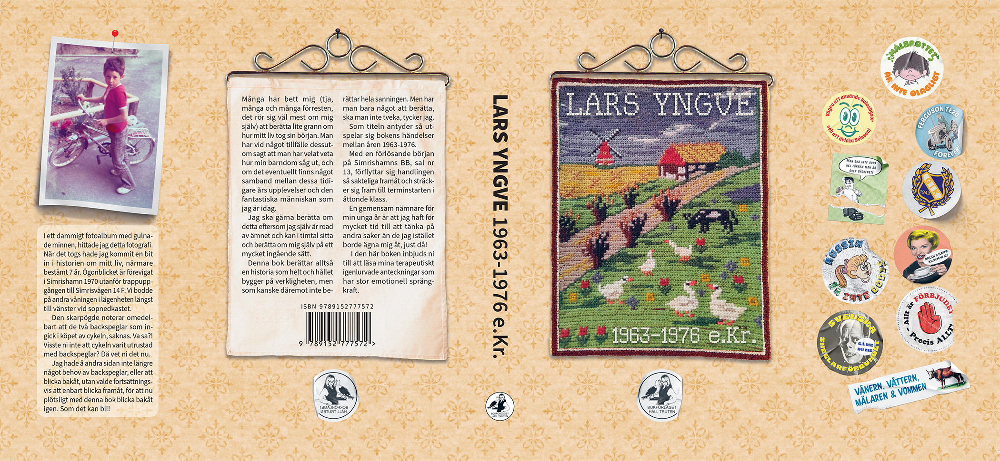

GRAPHIC DESIGN
1963-1976 e.Kr.
TillbakaFörfattare: Lars Yngve. Formgivning: Martin Reslow. Bokförlaget Håll Truten 2023.
".. Man har vid något tillfälle dessutom sagt att man har velat veta hur min barndom såg ut, och om det eventuellt finns något samband mellan dessa tidigare års upplevelser och den fantastiska människan som jag är idag."
Köp på Bokus!

Reklambilder för boken



